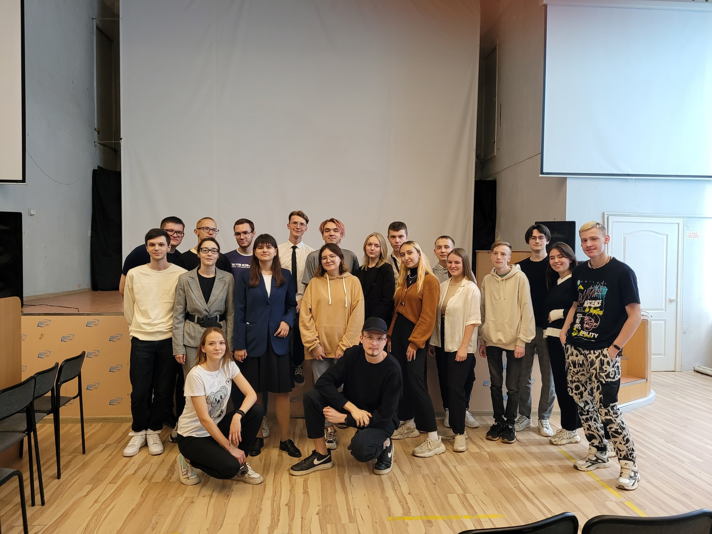

Студенческая группа ПР-21 – это коллектив молодых и талантливых студентов, обучающихся по направлению Прикладная информатика. Мы были сформированы в 2021 году на базе одного из ведущих вузов нашей страны, чтобы вместе пройти путь от начинающих программистов до профессионалов своего дела.
Наша цель – стать квалифицированными специалистами в области информационных технологий и применять свои знания для решения актуальных задач, стоящих перед современным обществом. Для этого мы учимся использовать различные языки программирования, создавать и анализировать базы данных, разрабатывать веб-приложения и многое другое.
Кроме учебы, мы активно участвуем в общественной жизни нашего вуза. Вместе мы организуем мероприятия, направленные на развитие наших коммуникативных и лидерских качеств, а также на укрепление дружеских связей между студентами.
Руководителем этой группы является Татьяна Лузина - талантливая и ответственная староста, которая всегда готова прийти на помощь и поделиться своим опытом с другими студентами. Татьяна обладает не только прекрасными организаторскими способностями, но и глубокими знаниями в области информационных технологий, что делает ее незаменимым помощником для всей группы.
Куратором группы является Агеева Ольга Ивановна